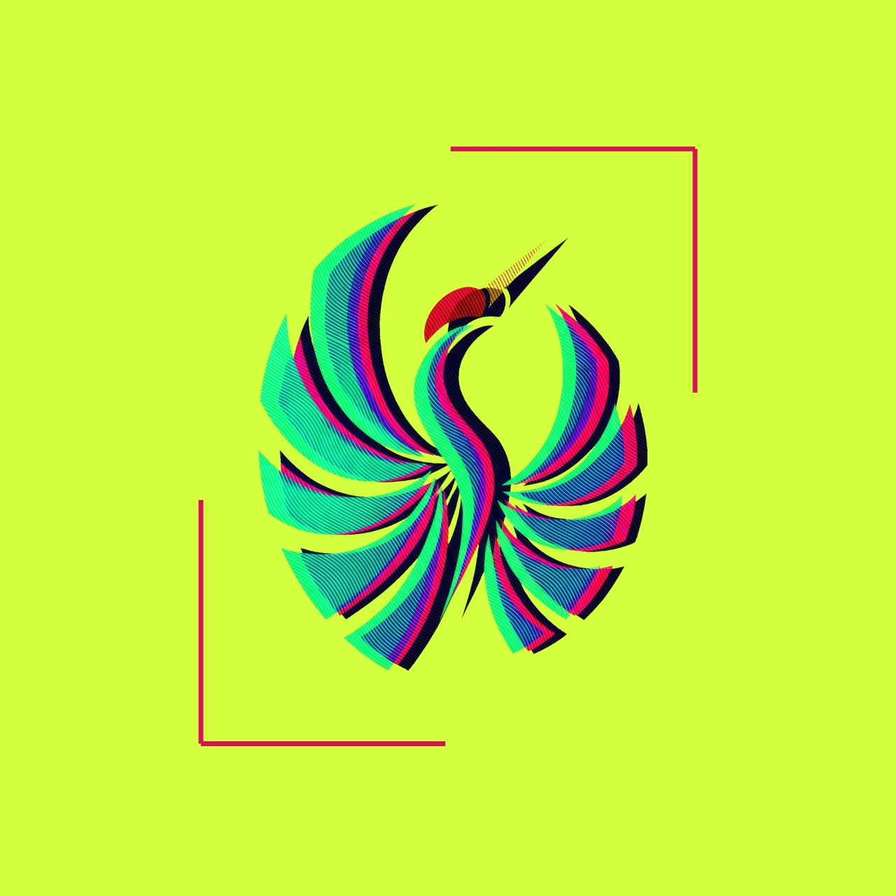
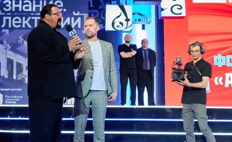
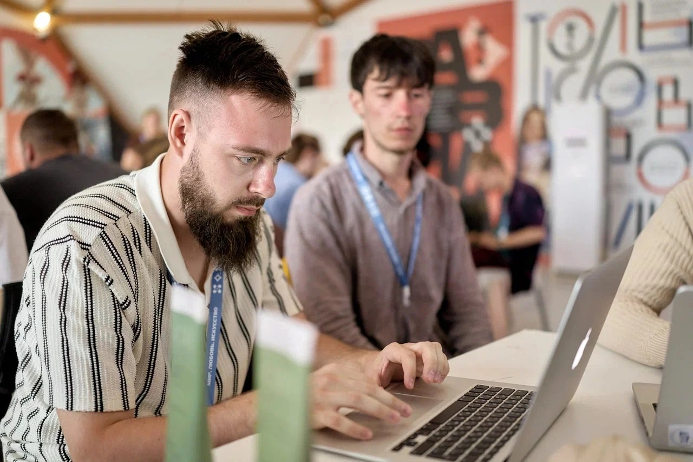

В движении
рождается
характер.
Мост между древними практиками и современными технологиями.
Не просто спорт
Сила — это
умение слышать.
Тело, внимание, характер и среда. Одна культура роста. Мы объединяем тренировку, восстановление, технологии, события и медиа.
Оздоровительная гимнастика
Внимательная работа с телом, дыханием и ресурсом. Узнать подробнееДинамическая нейродетекция
Наблюдаем состояние и видим индивидуальную динамику. Изучить технологиюКорпоративное айкидо
Практика для команд, лидеров и семейных сообществ. Узнать о программеСобытия
Турниры, интенсивы, мастер-классы и спортивные перформансы. Смотреть событияМедиацентр
Контент, стратегия и современный язык проекта. Открыть медиацентр
Наш символ
Аист не улетает.
Он раскрывается.
В русской культуре аист символизирует возрождение, верность и будущее. В нашем символе он застыл в движении: зелёный, синий и малиновый слои превращают жест в цифровое искусство.
Карта движения
Каждое движение
ведёт к смыслу.
Выберите точку на траектории и посмотрите, из каких принципов складывается практика проекта.
Внимание
Замечать тело, партнёра и момент. Первый шаг к точному движению и спокойному решению.

Точность движения
Сила рождаетсяиз внимания в моменте.
Наставники проекта
Люди, которые
ведут практику.


до события
События и сообщество
Практика становится
больше, чем зал.
Вместе с командой создаём события.
Спортивные шоу и перформансы
- Эффектные, динамические спортивные шоу, демонстрирующие мастерство и красоту боевых искусств
- Авторские постановки и эксклюзивные спортивные программы для частных и корпоративных мероприятий
Семинары и мастер-классы
- Семинары и мастер-классы по боевым искусствам
- Возможность участия других именитых спортсменов и знаменитостей
Турниры и спортивные мероприятия
- Полный цикл организации турниров и спортивных событий международного уровня
- Привлечение известных российских и мировых мастеров боевых искусств
Ближайшее
Дорожная карта
проекта
-
Завершён
Событие
«Хоропикник»
Хорошкола -
Скоро
Запуск
Старт проекта в Хорошколе
Новый этап сообщества и практики
Открыты к сотрудничеству
Давайте сделаем
сильное событие.
Тренировки
Приходите
на тренировку.
Индивидуальные и групповые занятия с наставниками проекта.
Записаться на тренировку